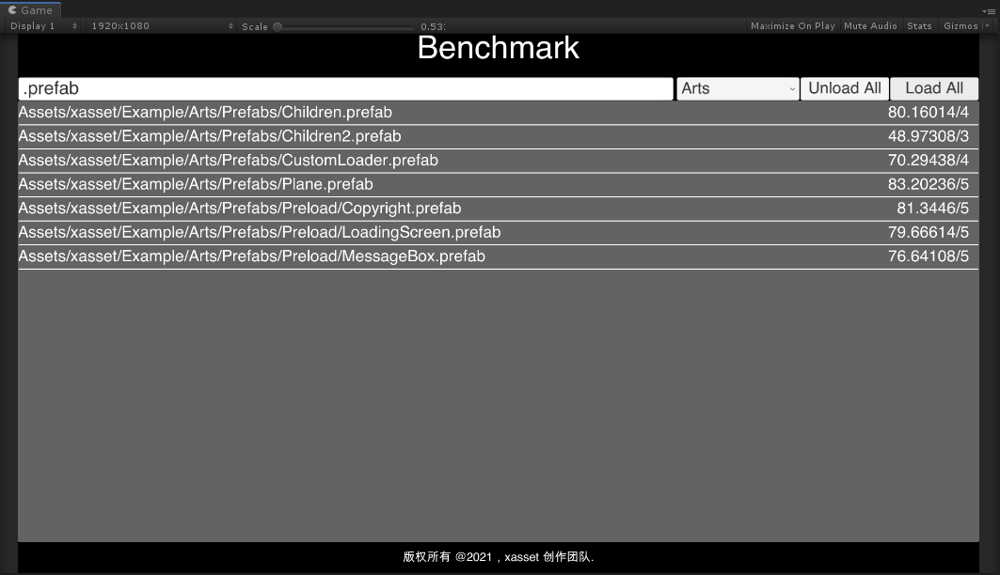

更新
2022.1.1p1
修复
- Fixed issues:2022.1. 校验模式为 hash 时下载报错
- Fixed issues:2022.1 在setting中勾选了 Force All scenes pack by file,但是unity依然报错Cannot mark assets and scenes in one AssetBundle.
新特性
- WebGL 预加载支持，可以达成 WebGL 下资源的同步加载，和异步转同步支持。预加载的资源再次预加载后会自动释放新的预加载中没有的部分。官网首页提供了示例，可以前往预览体验。
- Versions.CheckUpdateAsync 增加 url 和 hash 参数，versions.json 文件可以按 版本存在 服务器上，例如，versions_v1.json 这样，地址和hash 可以让游戏服下发。
2022.1
新特性
- 增加 Asset.LoadWithSubAssets(Async) 和单元测试代码，可以加载 png 中的多个 sprite
- 增加 新的内容加密更新机制和单元测试代码（团队版仅有，需要重新打资源）：所有资源全部提供加密支持，加密后的资源只要 Unity 打包输出的 AssetBundle 的 Hash 不变，不用更新，并且，可以进行强校验。Settings 勾选 Encryption Enabled 后会自动加密，之前的 Binary Mode 取消了，底层会自动根据平台调整加密策略。
- 增加 ScriptableBuildPipeline 扩展包，2021 版本的 Unity 建议使用 SBP 替换默认的构建管线，接入方式很简单，先通过 PackageManager 安装 ScriptableBuildPipeline，再导入扩展包即可。
- 添加 CollectAssets 的代理接口 onCollectAssets，可以按打包配置，添加自定义的资源到打包任务。
- 增加 Benchmark 场景，可以快速测试资源加载的开销，另外，某些时候，资源异常后打包，运行时加载会导致 app crash，用这个也能快速定位。 
优化与改进
- 优化 Group 配置的 Inspector 编辑器 刷新数据的体验，以及在 Entries 采集单个非文件夹资源可能出错的问题。
- 修复 Loadables 编辑器在预加载模式点击 Size 出现异常报错的问题。
- 编辑器分组创建资源的时候，类型为空的时候增加警告日志，同时修改有问题的资源让编辑器不能正常工作的问题。
2022
xasset 的巨大优势是什么？xasset 目前创造了哪些数字？又是如何取得这样的收获？新版本 xasset 在文档、工具链、机制方面有哪些提升？xasset 的创始人已经通过叙事的方式一一解读。了解更多，请阅读知乎专栏文章 xasset 2022 发布的亮点是什么。
重大改变
- 单模块整体或离散更新支持：如果单个模块的资源没有下载过，可以下载合并后的大文件减少 IO，如果下载过了，可以下载未合并的散文件更新。example 提供了完整的演示，这个机制有个弊端，如果版本 1 下载了一半，版本 3 的时候，版本 1 没下载完的全部作废。
- 更精细化的内存管理引用计数策略：生命周期不同的资源打包到一起后，会通过 Resources 快速回收，不过建议尽可能的优化打包粒度，让生命周期相同的资源打包到一起，打包粒度控制的好，可以把这个功能相关代码注释。
- 按引用关系自动分组：2022 之前按目录进行自动分组，用户应该尽可能把生命周期相同的资源放到同一个目录，2022 之后，按引用关系自动分组，xasset 内部会尽可能的把生命周期相同的资源打包到一起。不过依旧建议规划目录的时候，按生命周期进行划分。
关键字
- 分布式：原理与动机。
- 自动分组：按引用关系，对冗余资源分配打包粒度。
- 实时预览：提前发现问题提前解决问题。
- 分包：优化包体，减少用户等待，降低运营成本。
- 加密：保护内容，提升性能。
- 按需加载：动态组装需要预加载的内容，改进流程，减少策划工作量，创造更好的用户体验。
- 热重载：已经加载的资源，更新后，再次加载会自动生效。
- 异步更新：动态计算CPU负荷，自动调整更新时机，通过分而治之减少卡顿。
- 敏捷开发：编辑器既可以跳过打包快速运行，还可以无缝切换线上热更加载环境。
- 引用计数：更精细化的控制，不是按使用时机打包到一起的资源可以快速回收。
- 增量部署：打包后文件名带文件内容的hash，各种效率和稳定性可以得到全方位的提升。
架构
- 名字空间 从 VEngine 优化为 xasset
- 文件夹从 Versions 优化为 xasset
- Versions.Example 改成 xasset/Example
- Versions.xLua 不再单独提供，官网文档已经提供代码和流程
- Versions.Pad 改成 xasset/Pad
- PlayerConfig 改成 SplitConfig，另外通过 SplitMode 优化过去 BlacklistMode 的概念
示例

- 优化 Startup 场景的架构，自定义加载路径的机制拆分为独立的组件，大量简化 Startup 组件的业务流程。
- 增加 CheckUpdate 场景，提供了版本文件的更新过程演示，版本文件更新后，会主动提示用户下载，用户不下载可以使用旧版本进入，用户选择下载后，会显示下载进度，下载完成后会自动装载更新的版本文件。
- 增加 OpenningDialog 场景，介绍示例运行的流程和主要内容。
- 增加 Data 资源和相关打包配置，提供分布式打包配置样本。
- 增加 GetDownloadSize 场景的演示，提供了单个模块的整体更新和离散更新过程的实现代码。
- 增加 LoadRawAsset 场景的演示，提供了打包模式为 PackByRaw 的资源的加载代码示例。
- 增加 About 场景，介绍了一些 xasset 的创作成员和鸣谢对象。
- 增加 按目录分包的数据配置和按目录更新的代码配置，默认，2022 的清单文件会按目录生成资源列表的索引，旧版本有开关，新版本去掉了开关，默认启用。
- 增加 新的字体文件，WebGL 打包后中文内容可以正常显示。
- 优化 AssetManager，把 AssetManager 变成一个 MonoBehavoir 可以让 AssetManager 的生命周期和其挂载的 GameObject 绑定，在这个 GameObject 销毁的时候，自动回收挂载在 GameObject 上的 AssetManager 所加载的资源，减轻业务负担。
打包
包名简化键值配置支持，0 编码简化固定格式的包名输出。
包名追加分组名字配置支持，可以让分布式打包增加容错。
全新的打包任务架构，采集、检查、自动分组、打包资源、生成清单等过程全部抽象为子作业，打包任务可以包含 n 个子作业，然后依次批量执行，任意一个子作业报错立即中断打包任务。以下是部分代码片段，看过之后应该比较容易理解：
public BuildTask(Build build, int version = -1) : this(build.name)
{
buildVersion = version;
var options = build.options;
jobs.Add(new CollectAssets(this, build.groups));
jobs.Add(new CheckAssets(this));
if (options.autoGroupWithReference)
{
jobs.Add(new AutoGroup(this));
}
jobs.Add(new BuildBundles(this, options.buildAssetBundleOptions));
jobs.Add(new CreateManifest(this, options.packAllBundlesToBinary));
}
public void Run()
{
stopwatch.Start();
foreach (var job in jobs)
{
job.Run();
if (!string.IsNullOrEmpty(job.error))
{
Debug.LogError(job.error);
return;
}
}
stopwatch.Stop();
var elapsed = stopwatch.ElapsedMilliseconds / 1000f;
Debug.LogFormat("Run BuildTask for {0} with {1}s", name, elapsed);
}全新的版本管理机制，简化了 Manifest + MannifestVersion 的更新流程，业务层无需指定需要更新的清单模块，不同模块的清单文件的版本状态统一用全局唯一的 versions.json 文件管理，客户端会加载哪些清单也通过此文件控制，所以，这个文件可以用来控制不同渠道的内容分发。
清单文件的数据结构优化，对成千上万的资源来说，清单文件的输出大小可以节省 50% 以上，全新的目录索引生成机制，更快，更省空间，默认支持按目录获取目录相关的资源列表。
全新的自动分组策略，根据引用关系，生成按需加载的最优分组，具体参考关于自动分组的说明文档。
加载
- 更精细化的内存管理机制，对资源依赖做了额外引用计数处理，当资源的引用计数为 0 时，通过 Resources 释放未卸载的 AB 中的资源。例如：资源 a,b 打包到 a_b.bundle，先加载 a，然后加载 b，a 释放后，因为 b 还持有 a_b.bundle，过去，a 的资源不会立即回收，而现在可以正常回收。
- RawAsset 支持同步加载。
其他
- 代码重构、术语优化、代码注释各种完善。
- 谷歌分包机制适配到 com.google.play.assetdelivery-1.6.0.unitypackage
更多功能，请参考 xasset 的功能特性说明。